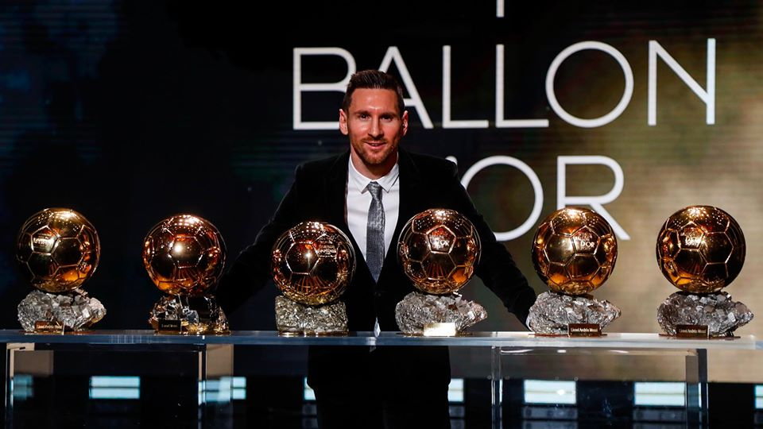
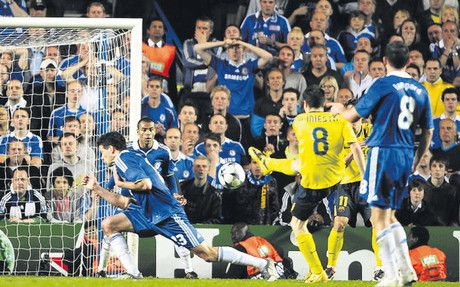

Força Barça Hub
⚽ Lionel Messi is FC Barcelona’s all-time top scorer!
🏟️ Spotify Camp Nou will reopen in 2026!
🏆 Barça has won 5 Champions League titles!
🇪🇸 La Masia produced Xavi, Iniesta, and Messi!
🔵🔴 Visca el Barça i Visca Catalunya!
⚽ Lionel Messi is FC Barcelona’s all-time top scorer!
🏟️ Spotify Camp Nou will reopen in 2026!
🏆 Barça has won 5 Champions League titles!
🇪🇸 La Masia produced Xavi, Iniesta, and Messi!
🔵🔴 Visca el Barça i Visca Catalunya!
Welcome to Força Barça Hub
Your ultimate FC Barcelona fan destination.
Nostalgic Barça Moments

Messi’s unforgettable 6 Ballon d’Or legacy 🐐

Iniesta’s iconic 93rd-minute goal vs Chelsea in 2009

Barça’s historic treble-winning season of 2014-15 🏆